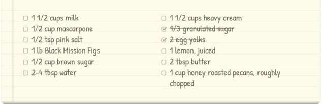

Chocolate Pizza
POSTED ON 15 DEC 2013 / DESSERTS

For the fig-swirl: Melt butter over medium heat in a saucepan. Add brown
sugar and stir to dissolve. Halve all of the figs and toss in the
saucepan with water and lemon juice. Cook over medium heat, stirring
frequently, until you have a chunky-jammy mixture. Add salt with one or
two stirs, set aside and let cool completely
Ice cream: In a small pot over medium heat, combine milk, and
granulated sugar until sugar is completely dissolved and the milk is
just harley lukewarm. Whisk in the egg yolks. Set mixture in the fridge
and wait until the fig mixture is cooled.
Using an ice cream machine, pour liquids into the frozen basin and
process according to manufacturer instructions, .e., ler spin and
thicken for 20 minutes before adding mascaraing, fig jam mixture, and
the nuts. Continue to process for +-10 minutes. Pour semi-frozen mixture
into a pyrex dish or glass tupperware. Freeze for at least two hours
before serving



Vanessa Stevenson
Food enthusiast, photography fan. Add a pinch of raw foodism and that's pretty much who I am.